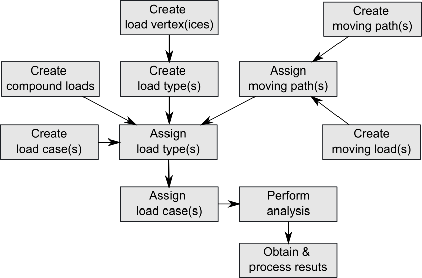
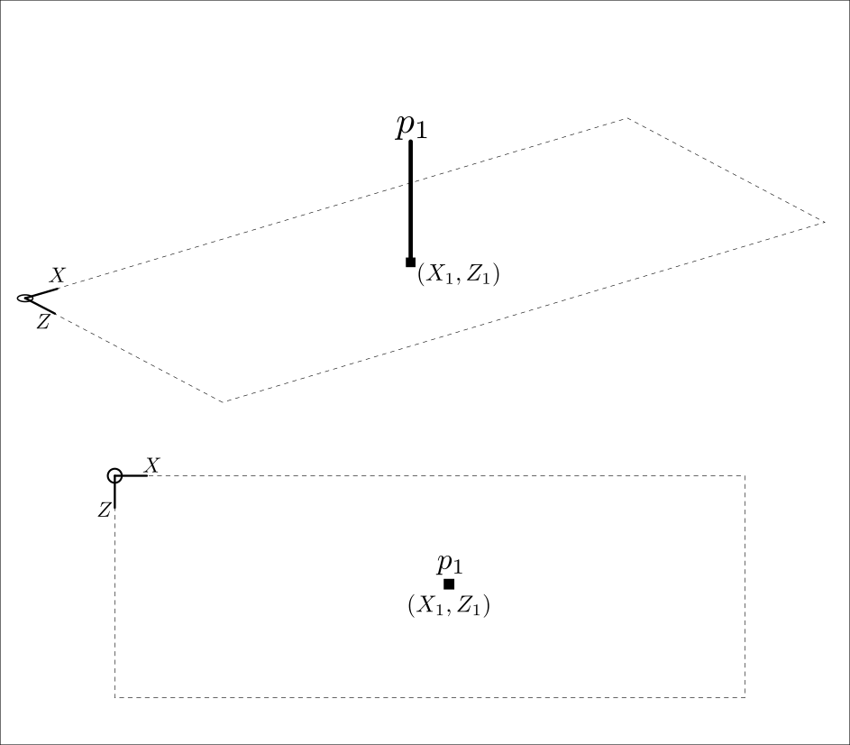
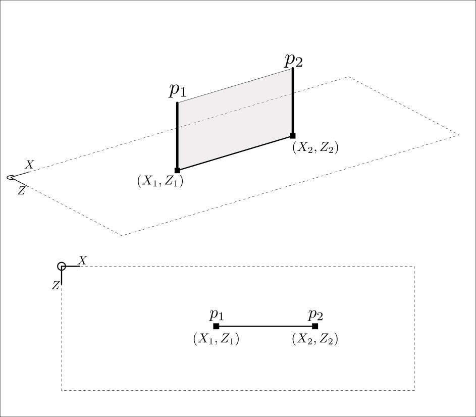
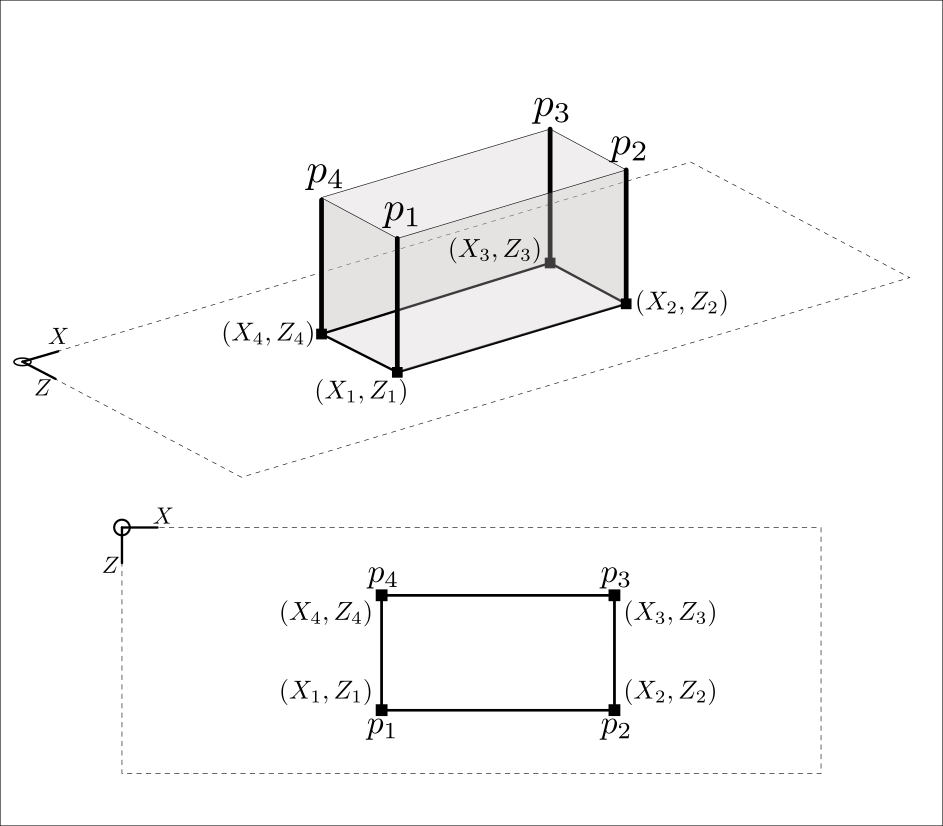
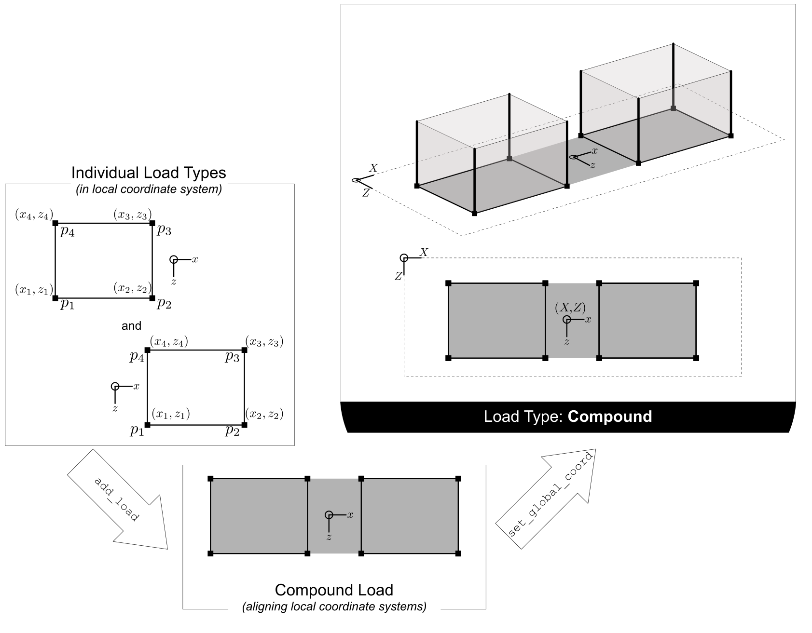
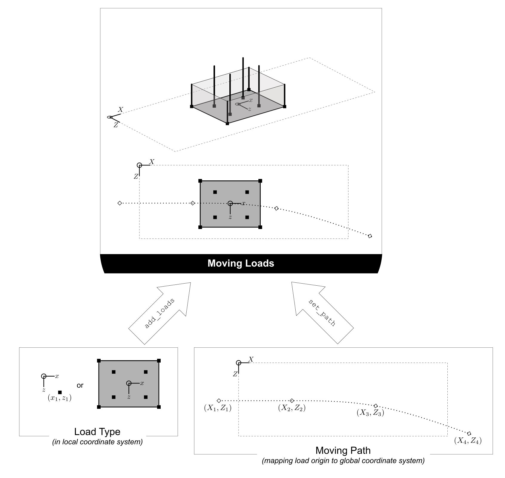

Defining loads#
ospgrillage contains a load module which wraps OpenSeesPy commands to define loads, assemble load cases, and set up moving load analyses.
For all example code in this page, ospgrillage is imported as og
import ospgrillage as og
Load analysis workflow#
Figure 1 shows the flowchart for the load module of ospgrillage.

Load types#
Every load in ospgrillage is built from two things:
A load vertex —
LoadVertex(x, y, z, p)is anamedtuplethat says where a load acts and how much.x,y,zare global coordinates andpis the load magnitude. The meaning ofpdepends on the load type (force, force/length, or force/area — see below). For grillage models,y = 0(the deck plane) almost always.A load object — a named object (
PointLoad,LineLoading,PatchLoading, orNodalLoad) that combines one or moreLoadVertexvalues with a name and load type.
# A LoadVertex defines where and how much
vertex = og.LoadVertex(x=5, y=0, z=2, p=20)
# A load object wraps that into a named load
point_load = og.PointLoad(name="single point", point1=vertex)
Loads are generally defined in the global coordinate system. A user-defined local coordinate system is required when defining Compound loads later on.
Tip
The convenience function create_load_vertex() creates a LoadVertex with y=0 by default and validates inputs — handy for quick interactive use:
vertex = og.create_load_vertex(x=5, z=2, p=20) # y defaults to 0
Similarly, create_load() is a factory that creates the appropriate load class from a loadtype string. Both shortcuts produce the same objects shown below.
Nodal loads#
Nodal loads are applied directly onto nodes of the grillage model. There are six degrees-of-freedom (DOFs) at each node.
Nodal loads use NodeForces(Fx, Fy, Fz, Mx, My, Mz) instead of LoadVertex. The following example creates a nodal load on Node 13 with 10 force units in both the X and Y directions.
nodalforce = og.NodeForces(Fx=10, Fy=10)
node13force = og.NodalLoad(name="nodal 13", node_force=nodalforce) # other DOFs default to 0
Note
You only need to specify non-zero values for the desired DOFs. Any unspecified component defaults to zero.
Point loads#
A point load is a concentrated force at a single location on the grillage model — e.g. a truck axle or a superimposed dead load. It requires one LoadVertex; p should have units of force (N, kN, kips) — see Figure 2.

# 20 kN point load at (5, 0, 2)
point_load = og.PointLoad(name="single point", point1=og.LoadVertex(5, 0, 2, 20))
Line loads#
Line loads are distributed along a line — e.g. self-weight of a beam or a barrier. They require at least two LoadVertex values (start and end); p should have units of force per distance (kN/m, kips/ft) — see Figure 3.

The following example creates a constant 2 kN/m UDL from x = −1 to x = 11 at z = 3.
Barrier = og.LineLoading(name="Barrier curb",
point1=og.LoadVertex(-1, 0, 3, 2),
point2=og.LoadVertex(11, 0, 3, 2))
Note
As of release 0.1.0, curved line loads are not available.
Patch loads#
Patch loads are distributed over an area — e.g. traffic lanes. They require at least four LoadVertex values (the vertices, in order); p should have units of force per area (kN/m², kips/ft²) — see Figure 4. Eight vertices allow a curved surface profile.

Lane = og.PatchLoading(name="Lane 1",
point1=og.LoadVertex(0, 0, 3, 5),
point2=og.LoadVertex(8, 0, 3, 5),
point3=og.LoadVertex(8, 0, 5, 5),
point4=og.LoadVertex(0, 0, 5, 5))
Note
As of release 0.1.0, curved patch loads are not available.
Compound loads#
Two or more of the basic load types can be combined to form a Compound load. All load types are applied in the direction of the global $y$-axis. Loads in other directions and applied moments are currently not supported.
To create a compound load, use the create_compound_load() function. This function creates a CompoundLoad object.
Compound load are typically defined in a local coordinate system and then set to global coordinate system of the grillage. Figure 5 shows the relationship and process of mapping local to global system of a compound load.

The following code creates a point and line load which is to be assigned as a Compound load.
# components in a compound load
wheel_1 = og.create_load(loadtype="point", point1= og.create_load_vertex(x=0, z=3, p=5)) # point load 1
wheel_2 = og.create_load(loadtype="point", point1= og.create_load_vertex(x=0, z=3, p=5)) # point load 2
The following code creates a Compound load and adds the created load objects to it:
C_Load = og.create_compound_load(name = "Axle tandem") # constructor of compound load
C_Load.add_load(wheel_1) # add wheel_1
C_Load.add_load(wheel_2) # add wheel_2
After defining all required load objects, CompoundLoad requires users to define the global coordinate to map the origin of the local coordinate system to the global coordinate space. This is done using set_global_coord(), passing a Point namedtuple (x, y, z) as seen in Figure 5. If not specified, the mapping’s reference point defaults to the Origin (0, 0, 0).
The following example sets the local Origin of the compound load, including all load points for all load objects of C_load by x + 4, y + 0, and z + 3.
C_Load.set_global_coord(Point(4,0,3))
Coordinate System
When adding each load object, the CompoundLoad class allow users to input a load_coord= keyword argument. This relates to the load object - whether it was previously defined in the user-defined local or in the global coordinate system. The following explains the various input conditions
Note
Compound loads require users to pay attention to the difference between local and global coordinate systems (see Package design for more information).
The CompoundLoad stores load objects in the local coordinate system. When passed to a LoadCase, the compound load’s vertices are automatically converted to global coordinates based on the set_global_coord() mapping.
Load cases#
Load cases are a set of load types (Point loads, Line loads, Patch loads, Compound loads) used to define a particular loading condition. Compound loads are treated as a single load group within a load case having same reference points (e.g. tandem axle) and properties (e.g. load factor)
After load objects are created, users add them to LoadCase objects. First, instantiate a LoadCase using create_load_case():
DL = og.create_load_case(name="Dead Load")
Then add load objects using add_load(). The following code shows how the above load types are added to the DL load case.
DL.add_load(point_load) # each line adds individual load types to the load case
DL.add_load(Barrier)
DL.add_load(Lane)
After adding loads, the LoadCase object is added to the grillage model for analysis using add_load_case(). Repeat this step for each defined load case.
example_bridge.add_load_case(DL) # adding this load case to grillage model
Moving load#
For moving load analysis, users create moving load objects using MovingLoad class. The moving load class takes a load type object (Point loads, Line loads, Patch loads, Compound loads) and moves the load through a path points described by a Path object.
Figure 6 summarizes the relationship between moving loads, paths and the position of the loads on the grillage model.

Moving path#
Path object is created using create_moving_path().
Path requires two Point namedtuples (x, y, z) to describe its start and end position. The following example creates a path from 2 to 4 distance units in the global coordinate system.
single_path = og.create_moving_path(start_point=og.Point(2,0,2), end_point= og.Point(4,0,2))
Creating moving load#
The following example code creates a compound load consisting of two point loads moving along the defined single_path
# create components of compound load
front_wheel = og.create_load_vertex(x=0, z=0, p=6)
back_wheel = og.create_load_vertex(x=-1, z=0, p=6)
Line = og.create_load(loadtype="line",point1=front_wheel,point2=back_wheel)
tandem = og.create_compound_load("Two wheel vehicle")
move_line = og.create_moving_load(name="Line Load moving") # moving load obj
move_line.set_path(single_path) # set path
move_line.add_load(Line) # add compound load to moving load
From here, use add_load_case() to add the moving load to the grillage model. The function automatically creates multiple incremental Load cases, each corresponding to a load position along the moving path.
example_bridge.add_load_case(move_point)
Advanced usage#
All basic loads added to a MovingLoad via add_load() are assigned a single common Path.
MovingLoad also supports individual paths for each load. For this, pass a global_increment parameter when creating the moving load to ensure all paths use the same increment. Then, pass the path_obj keyword argument when adding each load.
The following example shows this procedure:
# create moving load with global increment of 20 for all unique moving path
moving_load_group = og.create_moving_load(name="Line Load moving",global_increment=20)
# add load + their respective path
move_load_group.add_load(truck_a,path_obj=path_a)
move_load_group.add_load(truck_b,path_obj=path_b)